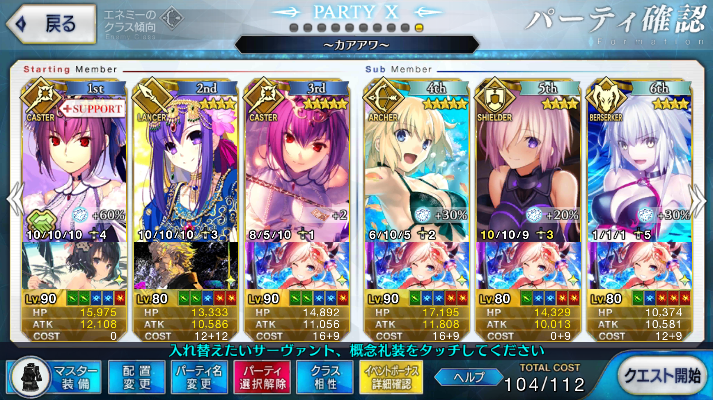

【FGO】2018年夏イベント サーヴァント・サマー・フェスティバル！ カアアワ
目次
この記事ではFGOイベントの周回を扱います。
編成画像にて最終再臨絵のネタバレがあるのでご注意を
基本方針
- 3T周回する
ドロップアイテム
- ミミ＄札
- 同人探求力
- 弓の秘石
- 世界樹の種
- 奇奇神酒
エネミー構成
- 虫
- ドラゴン（2w）
- アタランテ（3w）
編成例

Wスカディシステム
スキル育成の進んだスカディ自体がまだ多くなく、フレンド礼装までは吟味できないため、ミミ＄札や同人探求力稼ぎのAP効率はやや落ちる
ただし、自前で礼装を4枚積めるため、礼装所持状況次第では他の構成よりも効率が良い
また、2wでの火力やリチャージが少ないため、片方の凍える吹雪を2wで使ったり、2004年の断片でコードHを使うなどして火力やNPリチャージを補うと良い
周回用キャラ選別
アーラシュ
いつもの
パールヴァティー
Wスカディでなくとも、スカディ単騎と合わせて1～2wを任せても良い
天地人有利
ランスロット（狂）
パールヴァティーと似た運用ができる
自前の火力バフが宝具使用時にしかなく、クラス相性倍率も1.5のため、クリティカルに頼ることになり、カード運に左右されやすい
天地人相性は普通
ワルキューレ
パールヴァティーと似た運用ができる
自前の火力バフがクイック＆宝具威力の複合かつ3T持続するため、1～2wの火力はパールヴァティーよりも出やすい
天地人有利
ジャンヌ・ダルク・オルタ・サンタ・リリィ
周回用ランサー
2016年クリスマス及びその復刻で配布されており、当時イベントを走っていれば宝具レベルが上がっていて火力を出しやすい
天地人相性は不利のため、火力面で補助は必要になる
アルトリア
火力補助にNP獲得スキルという、周回に使ってくれと言わんばかりの性能をしている
天地人相性も良く、宝具レベルが2以上であれば積極的に使いたい
宝具レベルが1だと火力に不足を感じやすい
アルトリアオルタ
NP獲得こそないものの、火力は高く、天地人相性も変わらず良い
スター獲得スター集中クリティカル威力アップと、クリティカルアタッカーに必要なスキルを全て備えている
カード運は絡むが、星を生むパールヴァティーやランスロットと合わせて高い火力で殴っていける
NPだけ何らかの方法で補助する必要がある
エレシュキガル
NP50チャージを持つ点ではアルトリア同様だが、天地人相性は普通
冥界の護りにより、宝具を打ちながら味方全体にバフをかけられるのが魅力
最大限活かすなら、1～2wを任せることになるだろう